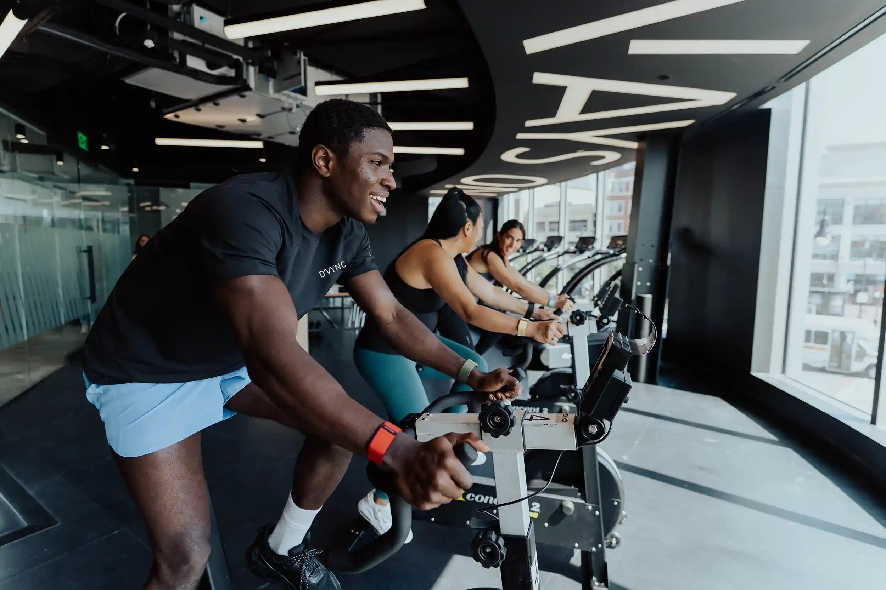

About D'Vync
We think your body already
knows. We help you listen.
D'Vync started with a simple frustration: plenty of devices count steps, but very few tell you what to actually do today. So we built one that does. Today, members in more than 40 countries wear D'Vync around the clock to sleep better, train smarter and stay healthy for longer.

Our mission
Turn signals into decisions.
Heart rate variability, sleep stages, resting heart rate, training load. On their own they're just numbers. Together they describe how ready you are, and that's the part we care about.
Every morning D'Vync condenses it into one recovery score and a plan: how hard to train, when to sleep and what to change. No screen on your wrist, no notifications pulling you away. The insight waits for you in the app.

Our story
Built by people who overtrained.
The idea came from a team of endurance athletes and engineers who kept getting the same thing wrong: pushing hard on days their bodies weren't ready, then wondering why progress stalled.
We set out to make the signal impossible to ignore and easy to act on. The result is a band you forget you're wearing and a membership that keeps getting smarter the longer you use it.
Our journey
From a spreadsheet to your wrist.
- 2019
A training log that lied
Two marathoners and a firmware engineer start tracking morning heart rate in a shared spreadsheet, trying to work out why hard weeks kept ending in injury.
- 2021
The first prototype
A 3D-printed sensor taped to a running strap. It looked rough, but it proved that heart rate variability measured during sleep could predict a bad training day.
- 2023
No screen, on purpose
We dropped the display to double battery life and remove distractions. Testers wore the band 24/7 for the first time, and the data got dramatically better.
- 2025
Device and Free launch
The D'Vync device arrives with the band included and the Free tier at no extra cost, so anyone can start tracking heart rate, steps and sleep.
- 2026
Premium joins the app
AI-driven analysis, recovery recommendations and long-term trend reports arrive as an optional subscription for anyone who wants to go deeper.

How we build
Tested on people before it reaches you.
Every new metric starts as a question from our members. Our science team turns it into a hypothesis, then tests it against lab-grade equipment: chest-strap ECGs, sleep-lab polysomnography and metabolic carts.
Only when a measurement holds up across hundreds of nights and thousands of workouts does it ship. If it can't be trusted, it doesn't go in the app, no matter how good it would look in a demo.
- ResearchQuestions from members, reviewed by our scientific advisers.
- ValidateSide-by-side testing against clinical and lab equipment.
- Ship and improveReleased to members, then refined with every update.
Our commitments
Promises we keep.
Privacy by default
Your health data is encrypted in transit and at rest. We never sell it, and you choose which apps can read it. Export or delete everything from the app whenever you like.
Made to last
Knit bands use recycled yarn, packaging is plastic-free and every sensor is designed to be repaired or refurbished. Members get free replacements instead of a reason to buy again.
Honest about limits
D'Vync is a wellness product, not a medical device. We tell you what a metric can and can't do, and we point you to a professional when something needs a closer look.
What we stand for
Clarity over clutter
One score and one plan beat a dashboard of numbers you have to decode yourself.
Your data is yours
We never sell health data. You can export or delete everything from the app at any time.
Science first
Every metric we ship is validated against lab-grade equipment before it reaches your wrist.
Rest is training
Progress happens when you recover. We celebrate a well-timed easy day as much as a personal best.
Built for everyone
From first-time runners to new parents and pro athletes, our coaching adapts to your body and your life.
Always improving
Your band gets new features through free app updates, so it keeps getting smarter the longer you wear it.

Ready to meet your baseline?
Your first month is free and every membership includes the band.